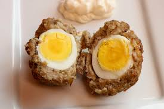

Home
How to Make Scotch Eggs

What is a Scotch Egg
A Scotch egg is a soft-boiled egg that has been wrapped in pork sausage, breaded, and deep-fried or baked.
Despite its name, this likely has English (not Scottish) origins. Scotch eggs are commonly served cold at
picnics in the U.K. and packaged Scotch eggs are widely available in British supermarkets, corner shops, and
gas stations.
Ingredients
- 1 quart oil for frying
- 4 eggs
- 2 pounds bulk pork sausage
- 1 cup all-purpose flour
- 4 eggs, beaten
- 4 cups dried breadcrumbs, seasoned
Steps
- Gather all ingredients. Preheat the oven to 350 degrees F (175 degrees C). Heat oil in a deep-fryer to
375 degrees F (190 degrees C).
- Place eggs in a saucepan and cover with water. Bring to boil. Cover, remove from heat, and let eggs sit
in hot water for 10 to 12 minutes. Remove from hot water, cool, and peel.
- Flatten sausage and make a patty to surround each egg.
- Very lightly flour the outer sausage layer then coat with beaten egg. Roll in bread crumbs to cover
evenly.
- Deep-fry prepared eggs in hot oil until golden brown while making sure each side is well cooked.
- Bake in the preheated oven for 10 minutes.
- Cut in half and serve.
- Enjoy!
Recipe
Source